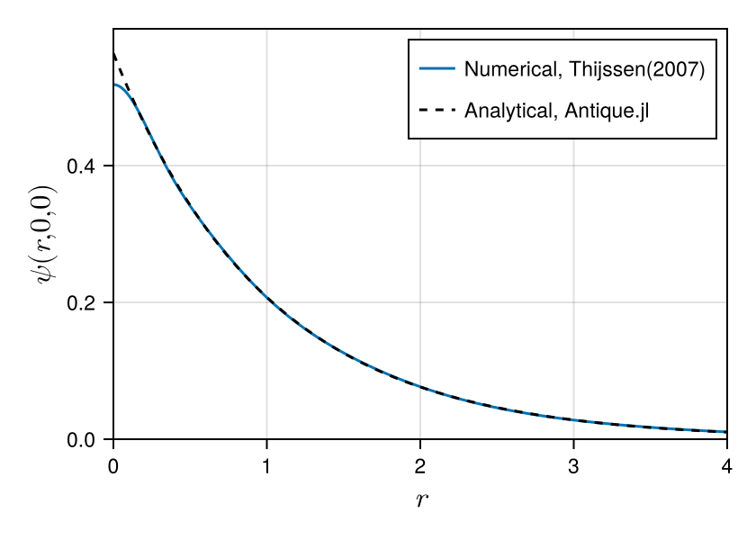

Antique.jl
Self-contained, Well-Tested, Well-Documented Analytical Solutions of Quantum Mechanical Equations.
Install
Run the following code on the REPL or Jupyter Notebook to install this package.
]add AntiqueOr specify the version like ]add Antique@0.9.7 to install a specific version. The version of this package can be found at ]status Antique.
Usage & Examples
Install Antique.jl for the first use and run using Antique before each use.
using AntiqueThe energy E(), the wave function ψ(), the potential V() and some other functions will be exported. There are two ways to avoid function name conflicts. Run import Antique instead of using Antique, and use the energy Antique.E(), the wave function Antique.ψ() and the potential Antique.V(). Or try giving other function names like using Antique: V as potential, E as energy, ψ as wavefuntion, HydrogenAtom. Here are examples for the hydrogen-like atom. The analytical notation of the energy (the eigen value of the Hamiltonian) is written as
\[E_n = -\frac{Z^2}{2n^2} E_\mathrm{h}.\]
The Hydrogen atom has the symbol $\mathrm{H}$ and atomic number 1 ($Z=1$). Therefore the ground state ($n=1$) energy is $-\frac{1}{2} E_\mathrm{h}$.
H = HydrogenAtom(Z=1)
E(H)
# output> -0.5The Helium cation has the symbol $\mathrm{He}^+$ and atomic number 2 ($Z=2$). Therefore the ground state ($n=1$) energy is $-2 E_\mathrm{h}$.
He⁺ = HydrogenAtom(Z=2)
E(He⁺)
# output> -2.0There are more examples on each model page.
Supported Models


- Delta Potential
DeltaPotential - Infinite Potential Well
InfinitePotentialWell - Harmonic Oscillator
HarmonicOscillator - PoschlTeller
PoschlTeller - Morse Potential
MorsePotential - Rigid Rotor
RigidRotor - Infinite PotentialWell 3D
InfinitePotentialWell3D - Spherical Oscillator
SphericalOscillator - Hydrogen Atom
HydrogenAtom - Coulomb 2-Body System
CoulombTwoBody
Demonstration
This is an example of a variational calculation for the hydrogen atom based on Thijssen(2007). We check the accuracy of the numerical solution by comparison with the analytical solution. Comparing wavefunctions can be difficult, but Antique.jl makes it easy. You can extend it to excited states ($n>1$) as well as the ground state ($n=1$). Thus, Antique.jl is useful for testing numerical methods. We hope many numerical methods to be developed using Antique.jl.
# calculations based on Thijssen(2007) https://doi.org/10.1017/CBO9781139171397
using LinearAlgebra
α = [13.00773, 1.962079, 0.444529, 0.1219492]
nₘₐₓ = length(α)
S = [(pi/(α[i]+α[j]))^(3/2) for i=1:nₘₐₓ, j=1:nₘₐₓ]
T = [3*pi^(3/2)*α[i]*α[j]/(α[i]+α[j])^(5/2) for i=1:nₘₐₓ, j=1:nₘₐₓ]
V = [-2*pi/(α[i]+α[j]) for i=1:nₘₐₓ, j=1:nₘₐₓ]
H = T + V
E, C = eigen(Symmetric(H),Symmetric(S))
# norm & energy
import Antique
HA = Antique.HydrogenAtom(Z=1, Eₕ=1.0, a₀=1.0, mₑ=1.0, ℏ=1.0)
println("Norm")
println(" numerical : ", transpose(C[:,1]) * S * C[:,1])
println(" analytical: ", 1)
println("Energy")
println(" numerical : ", E[1])
println(" analytical: ", Antique.E(HA,n=1))
# wave function
using CairoMakie
f = Figure(size=(420,300), fontsize=11.5)
ax = Axis(f[1,1], xlabel=L"$r$", ylabel=L"$\psi(r,0,0)$", limits=(0,4,0,0.6), ylabelsize=16.5, xlabelsize=16.5)
l1 = lines!(ax, 0:0.01:10, r -> sum(C[:,1] .* exp.(-α*r^2)))
l2 = lines!(ax, 0:0.01:10, r -> real(Antique.ψ(HA,r,0,0)), color=:black, linestyle=:dash, label="Antique.jl")
axislegend(ax, [l1,l2], ["Numerical, Thijssen(2007)","Analytical, Antique.jl"], position=:rt)
fNorm
numerical : 0.9999999999999998
analytical: 1
Energy
numerical : -0.4992784056674876
analytical: -0.5
Future Works
The candidate models are listed on the Wikipedia page of List of quantum-mechanical systems with analytical solutions. Please submit your requests and suggestions as issues on GitHub.
Developer's Guide
Here is the guideline for adding new models.
Acknowledgment
Thanks to all contributors. This package was named by @KB-satou and @ultimatile. @MartinMikkelsen contributed to writing docstrings. Special thanks to @hyrodium for his help with managing the documentation and advice on coding style. @lhapp27 implemented 2 models, and @ajarifi implemented 3 models.